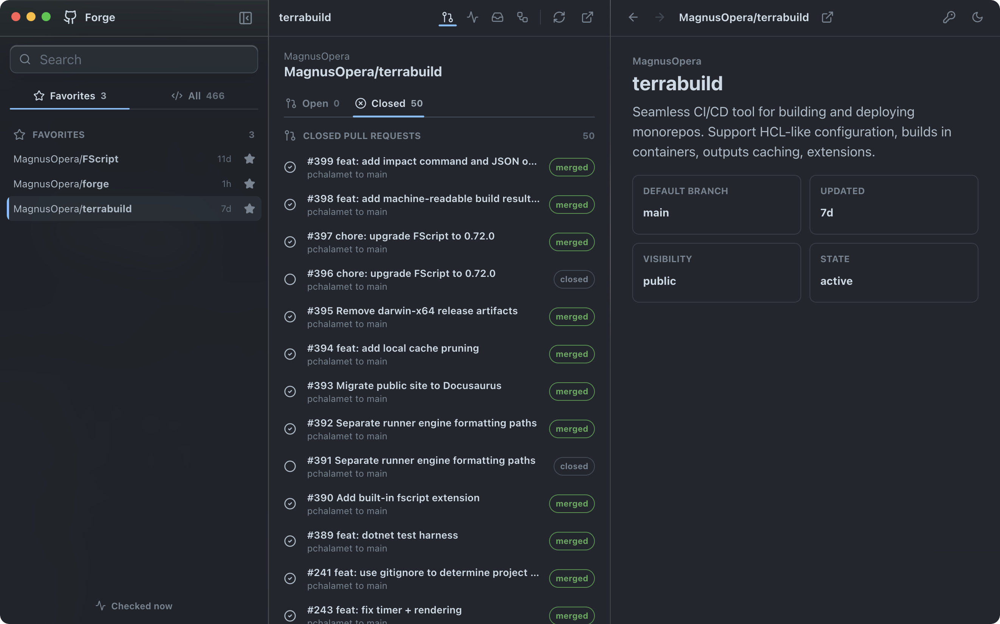

See the whole picture.
Repositories, pull requests, issues, checks, and workflows stay connected in a permanent three-pane workspace built for flow.
Native GitHub client for macOS
Pull requests, issues, workflows, and repositories in one focused desktop app. No tab maze. No context switching. Just the work that matters.
Apple Silicon · Local-only · Open source

Repositories, pull requests, issues, checks, and workflows stay connected in a permanent three-pane workspace built for flow.
Review code, update metadata, trigger workflows, and move between active work with keyboard-first speed.
Forge is local-only. Your GitHub token stays protected by macOS secure storage, with no Forge account or backend in between.
Ready when you are